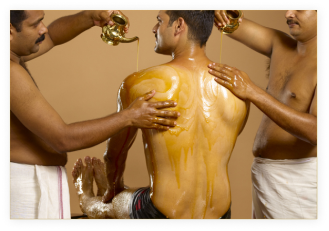
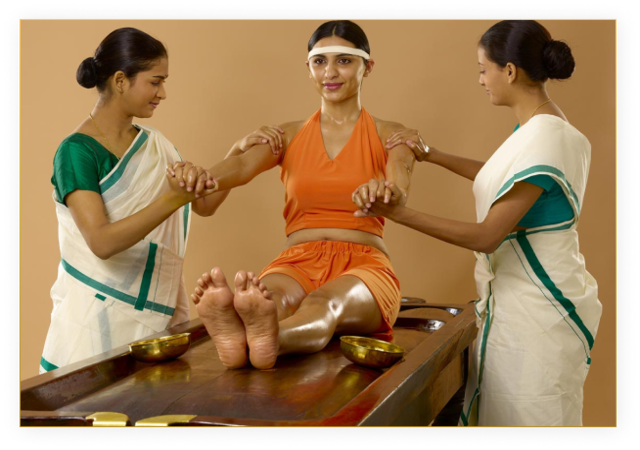

In Sarvangadhara, warm medicated liquid is systematically poured continuously and being gently massaged on all parts of the body as the patient lies on a Droni (Ayurvedic therapy table). The procedure varies according to the type of decoction used for the procedure. Ksheeradhara is a form of Sarvangadhara in which milk is the chief ingredient. Depending on the liquid used the name changes. i.e., Thakradhara if medicated buttermilk is the liquid used. The treatment should be continued uninterrupted for a specific amount of time. It is a time-tested effective remedy for many physical ailments.
Besides detoxification, it tones, strengthens and deeply rejuvenate the body ensuring better circulation. Highly beneficial in Rheumatic complaints, advised in paralysis, low back ache, neck pain and arthritis, hemiplegia, joint stiffness, reducing pain and inflammation, nervous disorders etc.